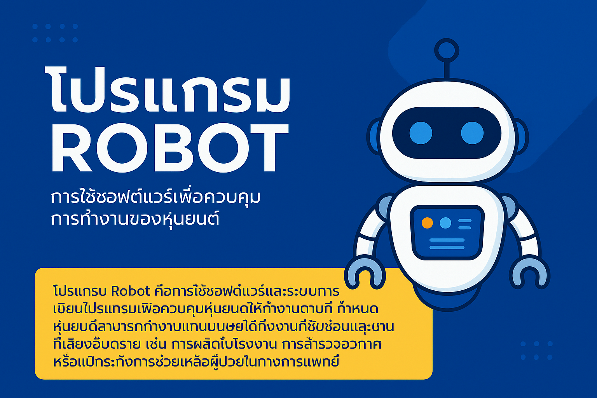
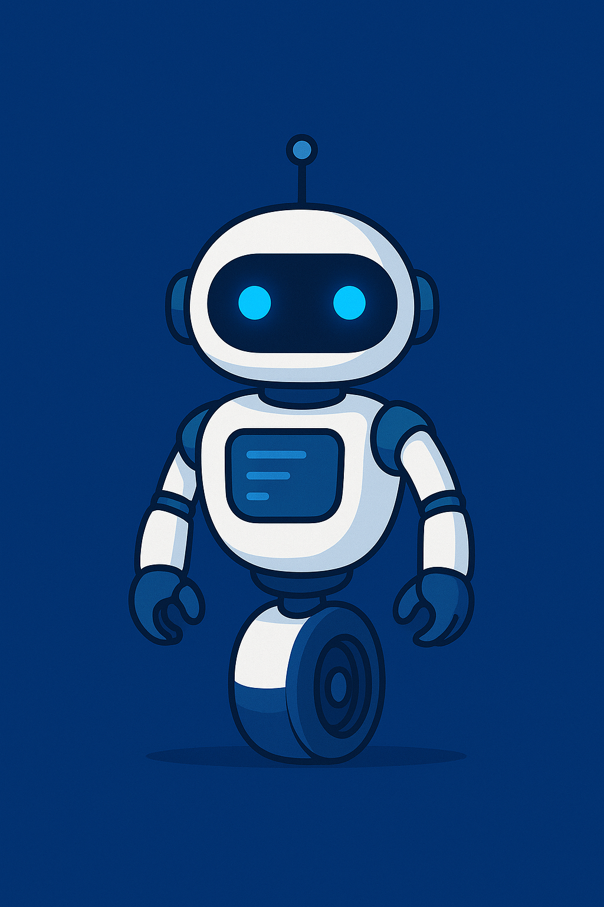

เรียนรู้ทุกเรื่องเกี่ยวกับหุ่นยนต์ การทำงาน และการเขียนโปรแกรมเพื่ออนาคต
โปรแกรม Robot คือการใช้ซอฟต์แวร์และระบบการเขียนโปรแกรมเพื่อควบคุมหุ่นยนต์ให้ทำงานตามที่กำหนด หุ่นยนต์สามารถทำงานแทนมนุษย์ได้ทั้งงานที่ซับซ้อนและงานที่เสี่ยงอันตราย เช่น การผลิตในโรงงาน การสำรวจอวกาศ หรือแม้กระทั่งการช่วยเหลือผู้ป่วยในทางการแพทย์
หุ่นยนต์มีรากฐานมาตั้งแต่สมัยโบราณ โดยในอดีตเริ่มจากกลไกอัตโนมัติที่ทำงานด้วยแรงดันน้ำและเฟืองจักร จนกระทั่งในศตวรรษที่ 20 เทคโนโลยีคอมพิวเตอร์และปัญญาประดิษฐ์เข้ามามีบทบาท ทำให้หุ่นยนต์พัฒนาไปไกลมาก ปัจจุบันหุ่นยนต์ถูกเขียนโปรแกรมให้มีความฉลาด สามารถเรียนรู้และตัดสินใจด้วยตัวเองได้
หุ่นยนต์ถูกนำไปใช้ในหลากหลายสาขา เช่น:
✅ เพิ่มประสิทธิภาพการทำงาน ✅ ลดความผิดพลาดจากมนุษย์ ✅ พัฒนาทักษะการคิดวิเคราะห์และการเขียนโปรแกรม ✅ ช่วยให้การเรียนการสอนน่าสนใจ ✅ เสริมสร้างความคิดสร้างสรรค์ในการออกแบบ
ในอนาคต หุ่นยนต์จะกลายเป็นส่วนหนึ่งของชีวิตมนุษย์มากขึ้น โดยจะพัฒนาให้ทำงานได้หลากหลายและฉลาดขึ้น เช่น หุ่นยนต์ที่สามารถสื่อสารโต้ตอบเหมือนมนุษย์ หุ่นยนต์ผู้ช่วยส่วนตัว หรือหุ่นยนต์เพื่อดูแลผู้สูงอายุ การเรียนรู้การเขียนโปรแกรมหุ่นยนต์จึงเป็นทักษะที่สำคัญสำหรับเยาวชนและผู้ที่สนใจในเทคโนโลยี
